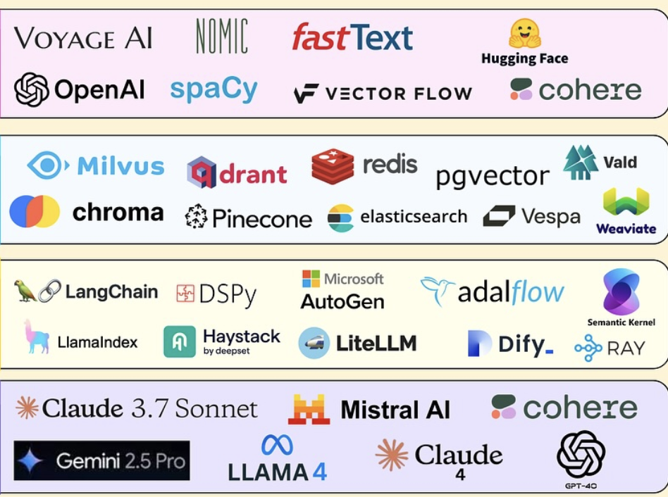

The RAG Technology Stack
-
Embedding Models
Convert text into numerical vectors for semantic similarity search. Examples: OpenAI embeddings, Cohere embeddings, Sentence Transformers from Hugging Face.
-
Vector Databases
Store and efficiently search through high-dimensional embeddings. Examples: Pinecone, Chroma, FAISS, Weaviate, Qdrant.
-
Orchestration Frameworks
High-level tools that coordinate the entire RAG pipeline. Examples: LangChain, LlamaIndex, Haystack.
-
Foundation Models
Large language models that generate responses based on retrieved context. Examples: GPT-4, Claude, Gemini, Llama.
